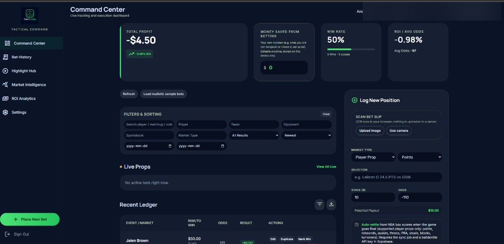
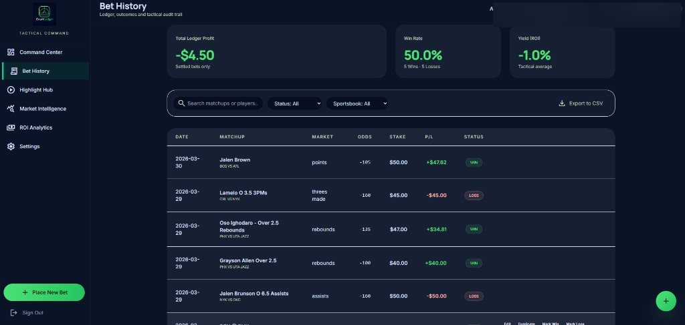
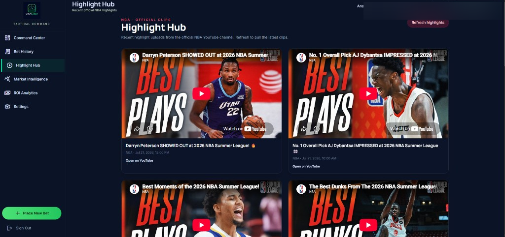
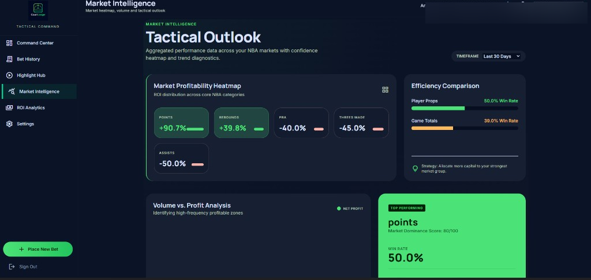
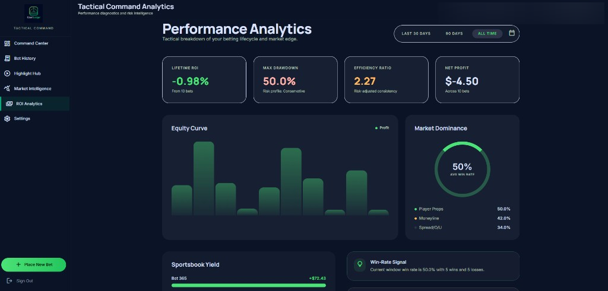
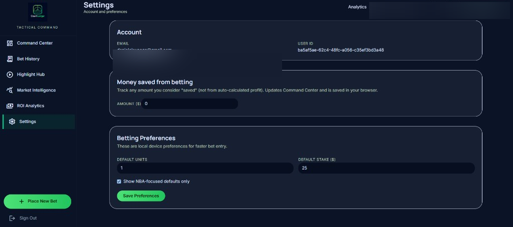

Summary
CourtLedger is a React + TypeScript SPA for recording and reviewing personal NBA bets. It uses Supabase Auth and client-side CRUD scoped to the signed-in user, with routes for command center, history, analytics, markets, highlights, and settings.
My role and contribution
Most of the application code was generated with Cursor and ChatGPT under my direction. I tested the app by hand, maintained the live deployment, added the Highlight Hub, and removed the earlier Bet Intelligence feature. I am the sole git committer, and I'm continuing to deepen my understanding of the authentication and data-access paths.
Status
Public demo at court-ledger.vercel.app. The main product flows sit behind login; the public shell and highlights API can be checked without an account.
Technology
React, TypeScript, Vite, Tailwind CSS, Supabase (Auth + PostgreSQL), Vercel serverless API routes, Vitest for limited unit tests. Tesseract.js and SheetJS appear for OCR and export in the repository.
Problem
Personal bet tracking and review without relying on a sportsbook UI — a ledger for history, grading, and simple analytics.
User workflow
Email/password auth gate → authenticated routes for bet entry, history, analytics, markets, Highlight Hub, and settings. Exports and OCR exist in code behind auth. Public /api/youtube-highlights returns highlight metadata without login.
What I personally built
- Directed AI-assisted development (Cursor + ChatGPT).
- Manual application testing.
- Added Highlight Hub.
- Removed Bet Intelligence (do not treat it as a current feature).
- Live deployment maintenance.
Architecture or data flow
Browser SPA → Supabase Auth/Postgres; Vercel proxies YouTube highlights; an optional edge function for auto-settle exists in the repo but has not been verified on the live deployment. SQL migrations define per-user RLS policies, though production behaviour has not been independently verified.
Screenshots
{kind=link}

{kind=link}

{kind=link}

{kind=link}

{kind=link}

{kind=link}

Engineering decisions
Auth-gated shell for personal data; public read endpoint for YouTube highlight metadata; keepalive endpoint fails closed without a cron secret (live 401 without secret observed).
AI-assisted development
ChatGPT helped with planning and scaffolding; Cursor helped with UI, debugging and SQL. The README was drafted with AI help. This is an AI-assisted project developed under my direction, and I'm still studying its main code paths.
Quality and verification
I tested the app by hand. The repository includes 8 unit tests for cron-auth helpers, and RLS integration tests that only run when Supabase credentials are configured. No CI workflow runs the test suite yet.
Edge cases and failure handling
Keepalive rejects unauthenticated cron calls (401 without secret). Auth and data isolation for real users were not exercised live in the evidence pass.
Known limitations
- Personal demo, not a multi-user product with usage metrics.
- The earlier Bet Intelligence feature was removed and is not part of the current app.
- Analytics on the active route use custom CSS bars rather than a chart library.
- Market Intelligence controls appear partially non-functional.
- Notifications icon is presentation-only.
- Production Row-Level Security behaviour has not been independently verified yet.
Next improvements
Review the auth and data-service layers in more depth, record a product walkthrough, and verify production user isolation.
Demo, repository, screenshots, and tests
- Demo: court-ledger.vercel.app
- Public API check:
/api/youtube-highlightsreturned highlight JSON in review - Repository: github.com/danekweaga/CourtLedger
- Screenshots: Command Center, Bet History, Highlight Hub, Market Intelligence, ROI Analytics and Settings above
- Tests: cron-auth unit tests in repo; owner manual testing; no CI results claimed
Last verified date
July 2026 — repository and live public endpoints reviewed.